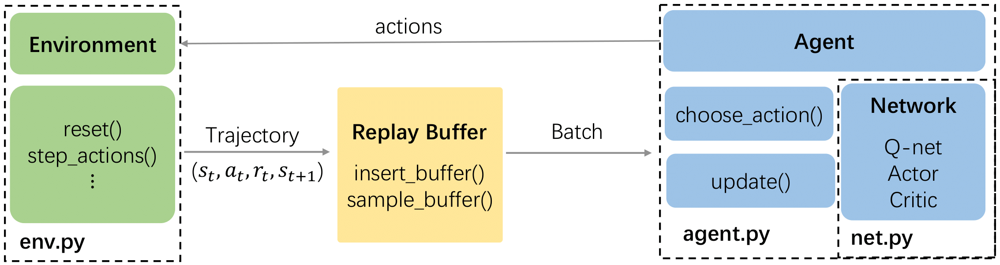

How to customize the robot
RL-friendly Interface
We follow the agent-environment interaction model to design the interface. User can re-define the state space, action space and reward function in the env.py file.

Initialize the RL-based Model
Specify the RL method in the main.py.
from algorithms.ippo import IPPO
mappo = IPPO.init_from_env(agent_alg=config.agent_alg,
tau=config.tau,
lr=config.lr,
hidden_dim=config.hidden_dim)
Configuration of the Training
User can configure the trainig parameters before start the training.
parser = argparse.ArgumentParser()
parser.add_argument("--env_id", help="Name of environment", default="Autodriving")
parser.add_argument("--model_name",
help="Name of directory to store " +
"model/training contents", default="DQN")
parser.add_argument("--seed",
default=1, type=int,
help="Random seed")
parser.add_argument("--n_rollout_threads", default=1, type=int)
parser.add_argument("--n_training_threads", default=12, type=int)
parser.add_argument("--buffer_length", default=int(1e5), type=int)
parser.add_argument("--n_episodes", default=30000, type=int)
parser.add_argument("--episode_length", default=24, type=int)
parser.add_argument("--steps_per_update", default=100, type=int)
parser.add_argument("--batch_size",
default=1024, type=int,
help="Batch size for model training")
parser.add_argument("--n_exploration_eps", default=3000, type=int)
parser.add_argument("--init_noise_scale", default=0.3, type=float)
parser.add_argument("--final_noise_scale", default=0.0, type=float)
parser.add_argument("--save_interval", default=200, type=int)
parser.add_argument("--hidden_dim", default=64, type=int)
parser.add_argument("--lr", default=0.01, type=float)
parser.add_argument("--tau", default=0.01, type=float)
parser.add_argument("--agent_alg",
default="PPO", type=str,
choices=['PPO', 'PPO'])
parser.add_argument("--adversary_alg",
default="PPO", type=str,
choices=['PPO', 'PPO'])
parser.add_argument("--discrete_action", default=True, type=bool)
config = parser.parse_args()
run(config)